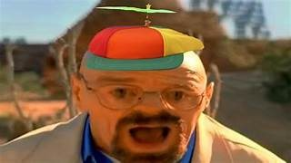

This is a Webpage about Walter White
"Breaking Bad" protagonist Walter White, portrayed by Bryan Cranston, transforms from a desperate high school chemistry teacher into a morally complex methamphetamine producer. Motivated by his terminal cancer diagnosis, White's journey into the criminal underworld blurs lines of morality. As he becomes the ruthless "Heisenberg," amassing power and wealth, relationships fracture, and consequences mount. The series offers a gripping exploration of the high cost of breaking bad, showcasing the tragic consequences of White's choices. Cranston's compelling portrayal solidifies Walter White as a riveting and morally ambiguous character in television history.
Link to test 